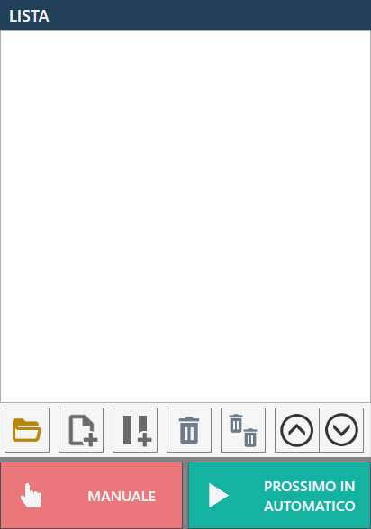
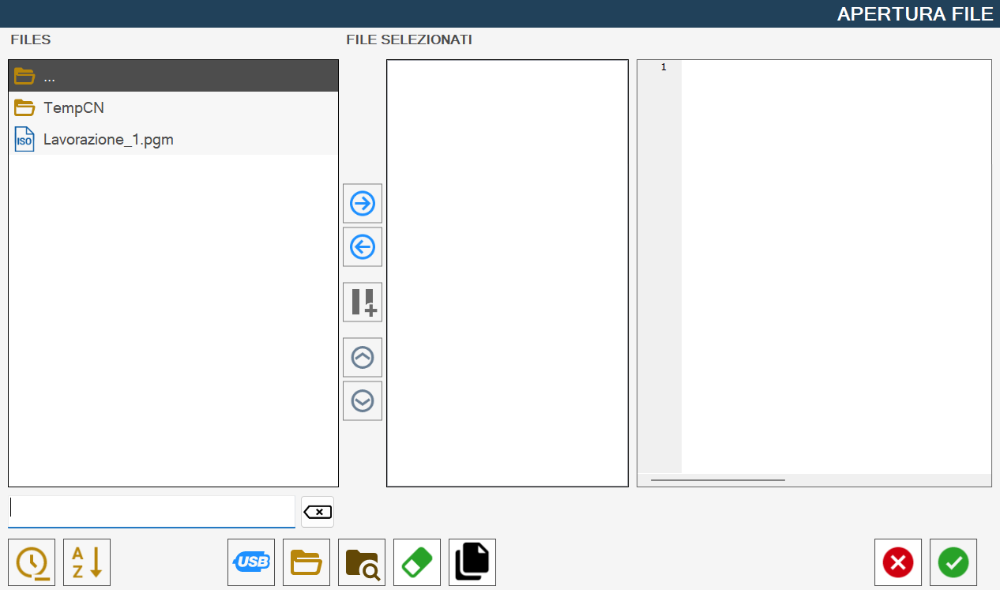
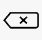
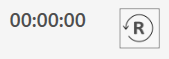
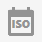
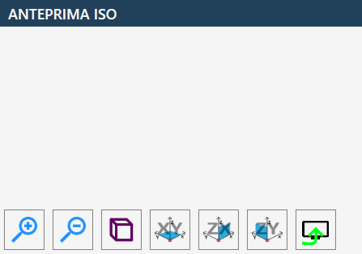
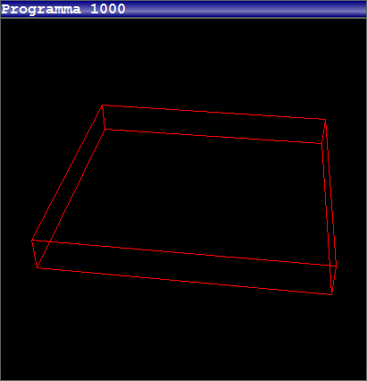

La pagina programmazione file ISO permette di gestire e avviare le lavorazioni tramite file .pgm creati precedentemente attraverso programmi CAD-CAM.

Lista
La lista del programma ISO, inizialmente vuota, contiene tutti i programmi ISO che possono essere eseguiti sequenzialmente.

Pulsanti
Sono presenti una serie di pulsanti per la gestione della lista.
Apri File | |
 | Nuova lista di ISO |
 | Aggiungi Pausa |
 | Rimuovi elemento selezionato |
Svuota lista | |
 | Sposta elemento selezionato più in alto |
 | Sposta elemento selezionato più in basso |
Nella parte inferiore troviamo inoltre i due pulsanti relativi alle modalità di esecuzione dei programmi:
  | Manuale / automatico |
Singolo / prossimo automatico |
Apri file
La pressione di questo pulsante farà apparire una finestra “Apertura File“ come mostrato nella seguente immagine:

Questa finestra è suddivisa nelle seguenti componenti:
Lista Files
include tutti i file in formato .pgm presenti nella directory attualmente selezionata
Pulsanti tra la lista Files e la lista File Selezionati
Lista File Selezionati
Lista inizialmente vuota
anteprima File Selezionato
Mostra una anteprima di un file .pgm selezionato da Files o da File Selezionati
Barra inferiore e filtro di ricerca
Pulsanti centrali, collocati tra la lista “FILES“ e la lista “FILE SELEZIONATI“
 | Seleziona elemento |
 | Rimuovi elemento |
| Inserisci pausa |
 | Muovi elemento selezionato in alto |
Muovi elemento selezionato in basso |
Viene qui riportato il contenuto della barra inferiore:
 | Pulisci filtro di ricerca |
Ordinamento per ultima modifica | |
 | Ordinamento alfabetico |
 | Visualizza file chiavetta |
Visualizza cartella ISO | |
Visualizza contenuti | |
 | Rimuovi file |
 | Abilita/Disabilita copia |
Codice Programma ISO
Il codice del programma ISO in esecuzione è visualizzato in questa finestra:

Pulsanti
In questa sezione del programma ISO abbiamo i seguenti pulsanti e relative funzionalità.
 | Timer e Reset |
 | Anteprima ISO |
 | Ricerca blocco |
Ricerca blocco per riga Successivamente all’inserimento di un numero nel campo “Numero della riga“ e alla pressione del pulsante “Vai a“ verrà spostata la visualizzazione del codice programma ISO alla riga desiderata, oppure all’ultima riga disponibile se il numero composto eccede il numero di righe presenti nel programma ISO selezionato. È possibile concludere la ricerca di un blocco, e ripristinare la visibilità del pulsante “Ricerca blocco“, tramite la pressione del pulsante Chiudi: | |
 | Funzione Dry Run (Attivato / disattivato) L’uso di questa funzione obbliga a non impiegare NESSUN tipo di materiale durante la lavorazione perché durante l’esecuzione non vengono rispettate le velocità all’interno del programma ISO; il controllo numerico eseguirà tutto il programma alla massima velocità nominale raggiungibile con assi interpolati. |
Funzione Test ISO (Attivato / disattivato) | |
 | Pannello ventose |
 | Salva |
Ricerca blocco
Durante l’esecuzione di file (.pgm) potrebbe essere utile la funzione ricerca blocco per riposizionare l’utensile nel punto dove la macchina abbia interrotto l’esecuzione del programma, in caso di blocco dell’utensile all’interno del materiale o altre tipologie di blocco.
Una volta premuto il pulsante è possibile ricercare la riga da cui proseguire/iniziare la lavorazione, tramite il numero di riga premendo il pulsante “Ricerca blocco per riga“ oppure scorrendo il file tramite la barra di scorrimento posta a fianco del file e selezionando la riga desiderata.
Dopo aver selezionato il punto del programma da cui la macchina proseguirà il lavoro interrotto, premere il pulsante “Start ciclo”; la macchina provvederà a ricalcolare tutte le righe di codice nel file .pgm senza effettuare alcun movimento. La velocità di questa operazione dipende dal numero di righe di codice che devono essere generate senza effettuare alcun movimento.
Ultimato il ricalcolo, la macchina attiva una pausa automatica, richiedendo un ulteriore pressione del pulsante “Start ciclo” per avviare la lavorazione.
Si consiglia prima di avviare il ciclo di considerare il posizionamento iniziale della macchina che coinvolge tutti gli assi contemporaneamente.
Questo è necessario in quanto la macchina si porta dalla posizione attuale al punto in cui inizia a lavorare cercando la strada più breve e, per far ciò, tutti gli assi si muovono per arrivare esattamente in quel punto.
Questo vuol dire che ad es. l’asse Z non si abbassa una volta arrivati al punto iniziale, ma si abbassa gradualmente durante il percorso. Questo potrebbe danneggiare la macchina o il materiale se quest’ultima dovesse collidere su del materiale in mezzo al percorso.
Quindi è possibile, in base alla situazione in cui ci si trova, deselezionare il movimento di uno o più assi, in modo tale da non causare danni.
Per farlo basta selezionare i pulsanti presenti sopra ogni asse che da verdi diventeranno rossi.
I pulsanti torneranno automaticamente verdi una volta premuto su “Start Ciclo”.
Anteprima ISO
Se l’anteprima ISO è stata abilitata verrà visualizzato a destra del riquadro “Codice Programma ISO“, un ulteriore riquadro simile a quello rappresentato di seguito:

L’anteprima ISO mette a disposizione i seguenti pulsanti:
Visuale Prospettica | |
Visuale ortogonale al piano XY | |
Visuale ortogonale al piano ZX | |
Visuale ortogonale al piano ZY | |
Attiva o disattiva la visualizzazione dell’anteprima  |
Esecuzione della lavorazione
L’operatore ha la possibilità di creare una lista di file PGM aprendo i file desiderati attraverso l’apposita funzione di caricamento.
Prima di avviare l’esecuzione, è possibile — opzionalmente — modificare l’ordine dei file nella lista e inserire eventuali pause tra un’esecuzione e l’altra. Tali pause permettono di gestire in modo più flessibile il processo e, se necessario, interromperlo in sicurezza.
Impostando la modalità di esecuzione su "Automatico", è inoltre disponibile la funzione "Test ISO", utile per verificare la correttezza del programma ISO selezionato prima dell’esecuzione vera e propria.
Per avviare il ciclo di esecuzione, l’operatore deve premere il pulsante “Avvia Ciclo”. In questo modo verrà eseguito il primo programma ISO caricato e visualizzato nella lista.
I programmi ISO possono essere eseguiti secondo due modalità operative:
La modalità “Singolo” consente di interrompere l’esecuzione della programmazione al termine dell’esecuzione di ciascun file ISO. È necessario premere nuovamente il pulsante “Avvia Ciclo” per procedere con l’esecuzione del file successivo nella lista.
La modalità “Prossimo in automatico” permette l’esecuzione dei file ISO in sequenza, senza necessità di intervento manuale, fino al termine della lista.
In entrambe le modalità, eventuali pause inserite tra i file permettono all’operatore di interrompere il ciclo in qualsiasi momento, garantendo così un controllo continuo sull’esecuzione.